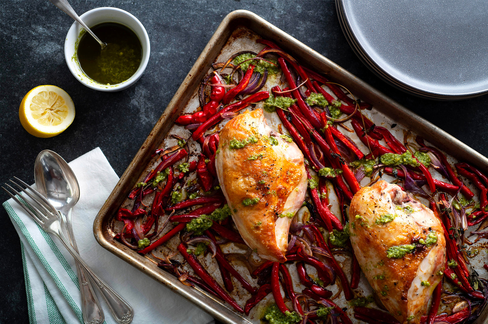

Кремовый пирог "Ромашка"
"Ромашка" часто выручает меня, когда возникают неожиданные гости)
Александра Серая
Что Приготовить на этой Неделе
Советы Бабушки Леонида
Рецепты, отобранные в течение недели Зенаидой Никифоровной
Больше Новых Рецептов
Получайте Нашу Рассылку
Получайте рецепты, советы и специальные предложенияпрямо на Ваш почтовый ящик.